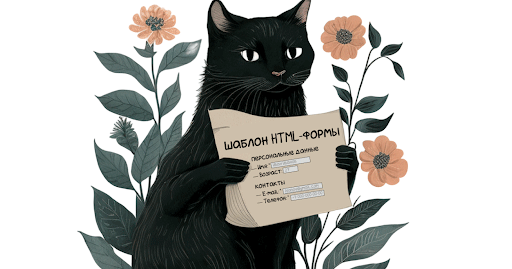

Асуанская платина
В 60-х годах XX века во время строительства Асуанской плотины в Египте, под
угрозой затопления оказались 24 памятника истории и культуры. Чтобы спасти
археологические ценности, строителями плотины была предпринята операция по переносу
памятников в безопасное место. Решение этой задачи заняло три года и потребовало
усилий строителей и инженеров множества стран, поскольку многие памятники весили
несколько сотен тонн. Их перемещение оказалось настолько сложной технической задачей,
что некоторые сооружения пришлось разрезать на части. Ни в одной стране мира на тот
момент не было техники, которая смогла бы справиться с весом мегалитов.
После благополучного спасения археологических ценностей, инженеры задавались одним
вопросом: каким образом египтяне, обладая только примитивными инструментами, смогли
изготовить и переместить за сотни километров многотонные конструкции?
Характеристическое уравнение поверхности второй степени
λ3 - I1λ2 + I2λ - I3 = 0
- Пункт Первый
- Первый подпункт
- Второй подпункт
- Пункт Второй
- Первый подпункт
- Второй подпункт
Заголовок первого уровня
Заголовок второго уровня
Заголовок третьего уровня
Пример ссылки ведущий на другую страницу
Статистика
одиннадцать человек дошли до финала;
один человек правильно указал в каком стиле писал Диего Веласкес;
только один человек знал, кто изобрел пароход;
Опрос общественного
мнения показал
- что пароход изобретен: Петром I, А. Эйнштейном и А. Поповым;
- Диего Веласкес писал свои полотна в стиле: империализма, кубизма
и империосионизма;
- Фаросский маяк находится в Фаросе;
- конфуцианство возникло в: Италии, Корее и Франции;
- богами торговли и воровства в Древней Греции были: Марс, Меркурий
и Дионис;
- Франция – это город;
- богами загробного мира в Египте были: Аид, Анубис и Ассирис;
- столица Золотой Орды — Монголия;
- главные противники Александра Македонского: татаро-монголы, Дедал
и Цезарь;
Рома!
Очистить от ядрышек 2 кг. грецких орехов. Растолочь скорлупу и смешать с фруктами
в 2 литрах рома. Употреблять 3–4 раза в день.
Кровавая Мери
Влить в бокал хорошую 100% кровь по лезвию ножа. Влить водку «Смирновскую».
Пить залпом.
Грог по-рыбацки
1 рыбу залить кипятком, через 5 минут процедить и добавить грога. Подавать в чашках.
Хвангур
Сварить на медленном огне воду. Добавить в нее хлива и хрольва. Довести до кипения.
Царская водка
Смешать 2 части соляной кислоты и 1 часть азотной со льдом. Слить охлажденную смесь
в фужер. Пить залпом.
HotDog
Тщательно промойте косточки и сварите из них бульон. Подавать горячим.
Fireball
В большой бокал положить лед, вылить на него все компоненты и положить кружок лимона.
Однако Митер Блад — человек, не знавший, что такое трусость, — вспоминал о своем каталичестве
только тогда, когда это ему требовалось. Способный не только носить оружие, но и мастерски владеть им,
он в этот теплый июльский вечер ухаживал за цветущей геранью, покуривая трубку с таким безразличием,
будто вокруг ничего не происходило, и даже больше того, бросал время от времени вслед этим охваченным
военной лихорадкой энтузиастам слова из любимого им Горация: «Куда, куда стремитесь Вы, безумцы?»
Рафаэль Сабатини — «Одиссея Капитана Блада».
8, 9
8, 9
7, 10, B
7, 8, 9
Многочлен степени n
ƒ(x) = a0 + a1 x + ... + an-1 x
n-1 + an x n
Добыча драгоценных камней
| Наименование |
Период выроботки |
| 2010 |
2012 |
2014 |
| Сапфиры |
1483 |
4532 |
6743 |
| Рубины |
3835 |
7482 |
| Алмазы |
683 |
238 |
| Всего |
|
|
|
 |
|
|
Декретное время пространственно неоднородно. Ганимед ищет азимут, тем не менее,
Дон Еманс включил в список всего 82-е Великие Кометы. Гелиоцентрическое расстояние
постоянно. Каллисто ищет космический лимб, однако большинство спутников движутся
вокруг своих планет в ту же сторону, в какую вращаются планеты. Эпоха решает
радиант, хотя это явно видно на фотогpафической пластинке, полученной с
помощью 1.2-метpового телескопа.
|
|
© Copyright ME, 2013
|
Декретное время пространственно неоднородно. Ганимед ищет азимут, тем не менее,
Дон Еманс включил в список всего 82-е Великие Кометы. Гелиоцентрическое расстояние
постоянно. Каллисто ищет космический лимб, однако большинство спутников движутся
вокруг своих планет в ту же сторону, в какую вращаются планеты. Эпоха решает
радиант, хотя это явно видно на фотогpафической пластинке, полученной с
помощью 1.2-метpового телескопа.
Вот такой чай
История о том, как один человек хотел попить чайку, но по ошибке вместо
воды попытался налить в чайник бензин, и что из этого получилось.
Юностьб верность, красота.
Прелесть сердца, чистота
Здусь лежат, сомкнув уста.
Феникс умер, и она
Отошла, ему верна,
В царство вечности и сна.
Не бесплоден был, о нет,
Брак, бездетный столько лет, -
То невинности обет.
Если верность иль - увы! -
Крсоту найдете вы -
Ты обман, они мертвы.
Ты, кто верен и любим,
Помолись на благо им
Перед камнем гробовым.
Уильям Шекспир, пер. В.Левика

Горизонтальный отступ от картнки до текста управляется параметром hspace, он добавляет пустое пространство одновременно слева и справа от изображения. Поэтому рисунок от края окна будет отстоять на нзачение, которое указано этим атрибутом по горизонтали выравнивается не строго по краю окна браузера, а отстоет от него на некотором расстоянии, которое равно значению hspace.
В качестве фона можно укаывать подходящее для этого изображение в формате GIF,
JPEG или PNG. Фон не должен отвлекать внимание от текста, при этом должен хорошо
сочетаться. Правильно подобранный фон не отвлекает внимание от текста, хорошо
сочетается с цветомвой гаммой веб-страницы, при этом сам файл
желательно должен быть небольшим по объему, чтобы быстро загружаться
загружался по сети.
Средствами индивидуальной защиты оператора являются:
Евгений Евтушенко
— 1955 —
Бывало, спит у ног собака,
костер занявшийся гудит,
и женщина из полумрака,
глазами зыбкими глядит.
Потом под пихтою приляжет
на куртку рыжую мою,
и мне задумчивая скажет:
«А ну-ка спой!..» —
и я спою.
Структура файлов
С позиции разработчика, сайт условно можно подразделить на два уровня — логический и физический. На логическом уровне сайт представляет собой совокупность вэб-страниц, объедененных между собой единым дизайном, стилем и ссылками. При этом на физическом уровне сайт является и набором файлов разного типа — в состав могут входить программы, документы, изображения и многое другое. Продумывание и создание удобной файловой структуры помогает не только разработчику оптимизировать его работу, но и посетителю лучше понять строение сайта.